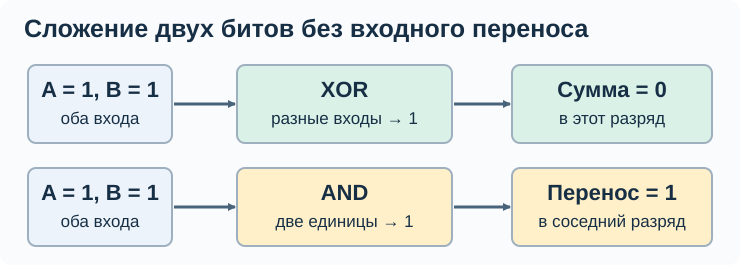

Как из двух битов получается сумма
Когда мы пишем 1 + 1, ответ занимает уже два двоичных разряда: 10₂. Разберём, как схема с двумя входами выдаёт эти два бита.
Как провод передаёт ноль или единицу
Внутри микросхемы информация передаётся электрическими сигналами. Один диапазон напряжений схема распознаёт как 0, другой — как 1. Точные границы зависят от технологии. Транзистор позволяет одним электрическим сигналом управлять током. Из транзисторов собирают логические элементы. Например, на выходе элемента AND появляется единица, только когда оба входа равны единице.
Как сложить один разряд
У схемы сложения два выхода. На одном нужен бит суммы в текущем разряде, на втором — перенос в следующий. Выпишем все четыре случая. В строке с двумя единицами ответ читается как «один перенос и ноль в текущем разряде».
| A | B | Бит суммы | Перенос |
|---|---|---|---|
| 0 | 0 | 0 | 0 |
| 0 | 1 | 1 | 0 |
| 1 | 0 | 1 | 0 |
| 1 | 1 | 0 | 1 |
Столбец суммы совпадает с результатом XOR («входы различаются»), столбец переноса — с AND («обе единицы»). Подадим два сигнала сразу на оба элемента. Такая схема называется полусумматором.

Сложи два входных бита
Подай две единицы. Затем выключи любой вход и проследи отдельно за битом суммы и переносом.
У старшего разряда бывает ещё один вход — перенос от правого соседа. Схема, которая складывает все три бита, называется полным сумматором. Например, при сложении 0111₂ + 0001₂ перенос проходит через три младших разряда и результатом становится 1000₂. В процессорах используют и схемы, которые вычисляют переносы сразу для групп разрядов.
Почему результат можно сохранить
Выход логического элемента меняется вслед за входами с небольшой задержкой. Чтобы результат дождался следующей операции, нужны элементы памяти. Например, D-триггер захватывает один бит по активному фронту тактового сигнала и удерживает его до следующего такого фронта. Несколько таких элементов с общим тактом могут образовать регистр. В простейшем четырёхбитном регистре четыре отдельных элемента одновременно сохранят 1000.
Здесь соединяются три темы справочника: побитовые операции описывают преобразования отдельных разрядов, процессор выбирает операцию, а память сохраняет данные между обращениями.
Курс Нисана и Шокена предлагает собрать полусумматор, полный сумматор и затем арифметико-логическое устройство. Nand to Tetris, Boolean Arithmetic.